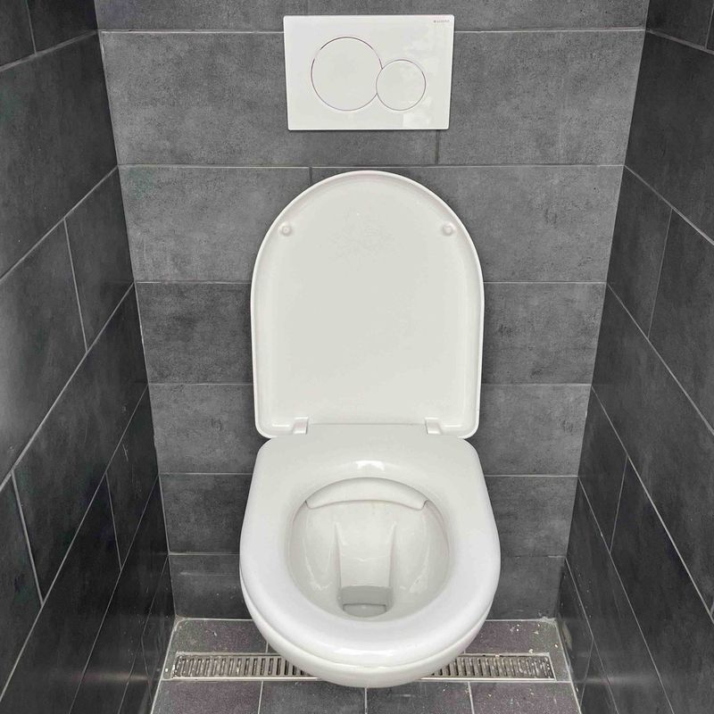

Rekonstrukce koupelny a bytu
Plánujete rekonstrukci? Rozvody uděláme my.
Rozvody vody, kanalizace i topení při rekonstrukci bytu, domu nebo koupelny. Po prohlídce dostanete cenovou nabídku a cena v ní uvedená platí. Působíme v Královéhradeckém a Pardubickém kraji.
- 4,9 z 38 recenzí na Googlu
- Po–Pá 8:00–17:00
- Cenová nabídka zdarma

Kdy se nám ozvat
Tři situace, které řešíme nejčastěji.
- Nová koupelnaPřeložení rozvodů podle nového návrhu koupelny.
- Rekonstrukce bytu nebo domuOpravy a kompletní rekonstrukce rozvodů vody, kanalizace i topení.
- Hrubá stavba před obkladyHrubé rozvody před obkladem a konečná montáž po dokončení.
Jak to probíhá
Od zavolání po hotovou práci.
- 1Zavoláte nebo napíšeteŘeknete, co plánujete a v jaké fázi je příprava.
- 2Dostanete cenu předemPo prohlídce nabídka, jejíž cena platí.
- 3Hrubé rozvodyRozvody před obkladem podle návrhu.
- 4Konečná montážSprchy, umyvadla, bojlery po dokončení.
Co děláme
Co děláme při rekonstrukci.
- Montáže dřezů, sprch, umyvadel a bojlerů
- Opravy a kompletní rekonstrukce bytů, rodinných a bytových domů
- Přeložení rozvodů podle nového návrhu koupelny
- Hrubé rozvody před obkladem a konečná montáž po dokončení
- Podlahové topení a nové rozvody topení při rekonstrukci koupelny
„Po dlouhé době při naší zdlouhavé rekonstrukci konečně přístup a řemeslníci, které mohu maximálně pochválit a rád ho budu sdílet se všemi ostatními 🤩. Chlapi mi pomohli už od výběru technologie, vše srozumitelně vysvětlili, spočítali a namontovali. Dokonce zdarma opravili i drobnosti po předchozím instalatérovi! Realizace trvala přibližně 2 týdny a vše bez jediného problému. Doporučuji a přeji hodně štěstí 🤞“
Nakovalyni, recenze zákazníka
Kontakt
Ozvěte se nám. Rádi vám pomůžeme.
- Telefon+420 773 146 244Po–Pá 8:00–17:00
- Sídla společnostiStruha 794, 517 54 VamberkV Kopečku 169/14, 500 03 Hradec Králové
Nezávazná poptávka
Napište, co plánujete.
Ozveme se vám co nejdříve.